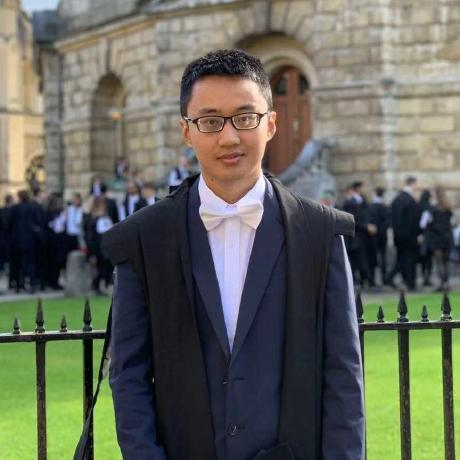

Master of Science
770 Broadway, New York City, USA
Facebook AI Research
Email: qiliu[at]fb.com
[Bio] [Publication] [Patent] [Experience][Award] [Teaching] [Service] [Miscellaneous]
Biography
I obtained my Master of Science (M.Sc.) degree from Department of Computer Science, National University of Singapore in 2016. Before that, I earned my Bachelor of Engineering (B.Eng) degree from Shandong University in 2014.
My principal research interests lie in natural language processing and machine learning. I am particularly interested in applying deep learning techniques for natural language understanding, text mining and graph representations.
Insertion-based Decoding with Automatically Inferred Generation Order,
Jiatao Gu, Qi Liu, Kyunghyun Cho.
arXiv:1902.01370, 2019. [PDF]
Constrained Graph Variational Autoencoders for Molecule Design,
Qi Liu, Miltiadis Allamanis, Marc Brockschmidt, Alexander L. Gaunt.
Neural Information Processing Systems (NeurIPS), 2018. [PDF][CODE]
Towards Natural and Accurate Future Pose Prediction for Human and Animals,
Shuang Wu, Zhenguang Liu, Shuyuan Jin, Qi Liu, Shijian Lu, Roger Zimmermann, Li Cheng.
Workshop on Perception, Learning, and Control at NeurIPS, 2018. [PDF]
Sentence-State LSTM for Text Representation,
Yue Zhang, Qi Liu, Linfeng Song.
Annual Meeting of the Association for Computational Linguistics (ACL), 2018. [PDF][CODE]
Mining Evidences for Concept Stock Recommendation,
Qi Liu, Yue Zhang.
North American Chapter of the ACL (NAACL), 2018. [PDF][CODE]
Learning Domain-specific Representations for Multi-Domain Sentiment Classification,
Qi Liu, Yue Zhang, Jiangming Liu.
North American Chapter of the ACL (NAACL), 2018. [PDF][CODE]
Multi-modal Multi-task Learning for Automatic Dietary Assessment,
Qi Liu, Yue Zhang, Zhenguang Liu, Ye Yuan, Li Cheng and Roger Zimmermann.
Association for the Advancement of Artificial Intelligence (AAAI), 2018. [PDF]
QALink: Enrich Text Documents with Relevant Q&A Site Contents,
Yixuan Tang, Weilong Huang, Qi Liu, Anthony K.H. Tung, Xiaoli Wang, Jisong Yang and Beibei Zhang.
ACM International Conference on Information and Knowledge Management (CIKM), 2017. [PDF][DEMO]
EtherQL: A Query Layer for Blockchain,
Yang Li, Kai Zheng, Ying Yan, Qi Liu, Xiaofang Zhou.
International Conference on Database Systems for Advanced Applications (DASFAA), 2017. [PDF][CODE]
Towards Personalized Activity Level Prediction in Community Question Answering Websites,
Zhenguang Liu, Yingjie Xia, Qi Liu, Qinming He, Yanxiang Chen, Roger Zimmermann.
ACM Transactions on Multimedia Computing, Communications and Applications (TOMM), 2017. [PDF]
Behavior Pattern Clustering in Blockchain Networks,
Butian Huang, Zhenguang Liu, Jianhai Chen, Anan Liu, Qi Liu, Qinming He.
Multimedia Tools and Applications (MTAP), 2017. [PDF]
Fusion of Magnetic and Visual Sensors for Indoor Localization: Infrastructure-free and More Effective,
Zhenguang Liu, Luming Zhang, Qi Liu, Yifang Yin, Li Cheng, Roger Zimmermann.
IEEE Transactions on Multimedia (TMM), 2016. [PDF][DATASET]
I Ate This: A Photo-based Food Journaling System with Expert Feedback,
Shubham Goyal, Qi Liu, Khairina Tajul-Arifin, Waqas Awan, Bimlesh Wadhwa, Zhenguang Liu.
Workshop on Healthcare at SIGCHI, 2016. [PDF][DEMO]
DocRicher: An Automatic Annotation System for Text Documents Using Social Media,
Qiang Hu, Qi Liu, Xiaoli Wang, Anthony K.H. Tung, Shubham Goyal, Jisong Yang.
ACM Special Interest Group on Management of Data (SIGMOD), 2015. [PDF][DEMO]
A Programmable SmartContract Defined Database,
Qi Liu, Yang Chen, Ying Yan, Thomas Moscibroda.
(US patent, filed date 17/03/2017, part of the project Microsoft Coco)
Facebook AI Research, New York City
Researcher, advised by Douwe Kiela, Aug. 2018 -
Microsoft Research, Cambridge
Research Intern, advised by Alexander Gaunt, Marc Brockschmidt, Miltos Allamanis, Mar. 2018 - Jun. 2018
Singapore University of Technology and Design
Research Assistant, advised by Yue Zhang, Feb. 2017 - Mar. 2018
Microsoft Research, Beijing
Research Intern, advised by Ying Yan, Thomas Moscibroda, Sep. 2016 - Dec. 2016
Holmusk
Data Scientist, Apr. 2015 - Oct. 2015
SeSaMe Centre, National University of Singapore
Research Assistant, advised by Anthony K.H. Tung, Dec. 2014 - May. 2016
Chinese Academy of Sciences
Research Intern, Jul. 2013 - Oct. 2013
Selected Honors & Awards
Lee Kuan Yew Global Business Plan Competition, Winner (3 out of 550), 2017
Microsoft Star of Tomorrow Excellence Award, 2016
ACM SIGMOD Travel Grant, 2015
Predict Exacerbation in Patients with COPD, CrowdANALYTIX, Winner, 2015
Changing the Landscape of Healthcare in US, CrowdANALYTIX, Winner, 2015
NUS Research Scholarship, 2014
Teaching
2015-2016 Semester 2, CS5344: Big Data Analytics Technology
Instructor: Tan Kian Lee
2015-2016 Semester 1, CS3244: Machine Learning
Instructor: Tan Chew Lim